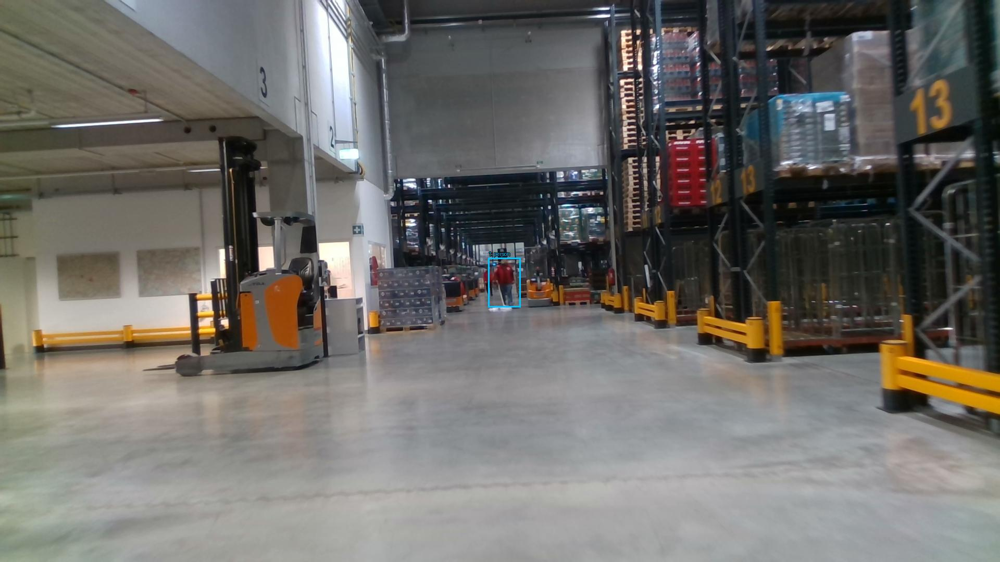
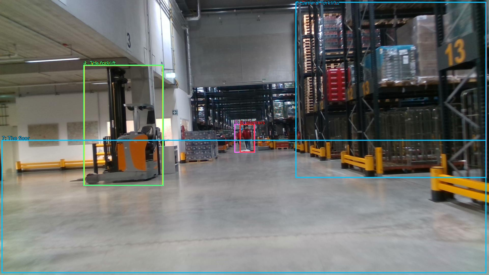

The image shows a large warehouse with a high ceiling and concrete floor. The warehouse is filled with rows of shelves and racks, and there are several forklifts parked on the right side of the image. On the left side, there is a forklift with a yellow forklift attachment. The forklift is moving through the warehouse, and in the background, there are workers working on the shelves. The floor is made of concrete, and the warehouse appears to be well-maintained. The image is taken from a low angle, looking down on the warehouse.


Original · Caption raw · Grounding raw · Koordinate
Številke so lokalni ID regije. Dolge slikovne oznake so skrajšane; spodaj so celotne fraze. Napovedane regije se lahko prekrivajo ali opisujejo skupine.
| ID | Celotna fraza | bbox xyxy |
|---|---|---|
| 1 | The warehouse | [1160.6400146484375, 7.020000457763672, 1911.3599853515625, 698.2200317382812] |
| 2 | several forklifts | [1160.6400146484375, 7.020000457763672, 1909.43994140625, 698.2200317382812] |
| 3 | a forklift | [329.2799987792969, 255.42001342773438, 640.3200073242188, 729.5400390625] |
| 4 | The forklift | [327.3599853515625, 254.3400115966797, 642.239990234375, 729.5400390625] |
| 5 | workers | [920.6399536132812, 486.5400085449219, 1001.2799682617188, 599.9400024414062] |
| 6 | workers | [941.7599487304688, 487.6200256347656, 999.3599853515625, 598.8600463867188] |
| 7 | The floor | [6.71999979019165, 549.1799926757812, 1909.43994140625, 1072.9801025390625] |